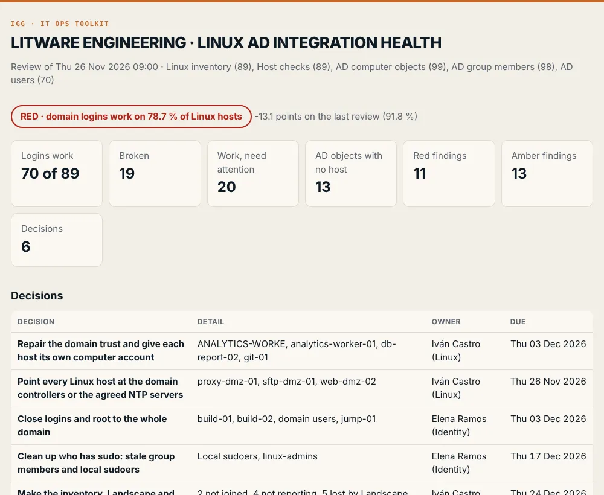

Dos servidores se llaman analytics-worker-01 y analytics-worker-02. Cuando un equipo Linux se une a Active Directory, su cuenta de equipo recibe un nombre de 15 caracteres como mucho, y los dos nombres se recortan al mismo. Así que los dos servidores usan una sola cuenta: cada vez que uno renueva su contraseña de equipo, el keytab del otro deja de coincidir y sus inicios de sesión del dominio empiezan a fallar. Es lo primero que señala la revisión de Linux unido a AD que acompaña a este post, un proyecto de código abierto que se ejecuta con datos de ejemplo de una empresa de ingeniería ficticia.
Linux unido a AD suele funcionar en silencio hasta que una mañana deja de hacerlo, y las dos mitades del problema viven en sitios distintos. La revisión las lee juntas: lo que encuentra un script de solo lectura en cada equipo (el dominio, la prueba de unión, el keytab, SSSD, la hora, el DNS, la política de inicio de sesión y sudo), el inventario de Landscape, y los objetos de equipo, grupos y usuarios de Active Directory.
Confianza con el dominio
Además de los dos servidores de analítica, un servidor de bases de datos de informes falla la prueba de unión: el keytab tiene la versión de clave 3 y el objeto de equipo la 5, porque alguien restableció la cuenta desde la consola. El servidor de Git dice que está unido, pero su objeto de equipo se borró en una limpieza de unidades organizativas. Tres portátiles llevan entre 77 y 131 días sin renovar su contraseña de equipo.
SSSD, hora y DNS
El servidor SFTP de la DMZ toma la hora de un pool público y va 413 segundos adelantado respecto a los controladores de dominio, más de los cinco minutos que admite Kerberos. Otros dos servidores de la DMZ usan fuentes de hora fuera de la lista acordada. Cinco estaciones de trabajo de Bilbao tienen SSSD en marcha pero no llegan al dominio, así que solo entra quien tiene las credenciales en caché, y nueve servidores del centro de datos no tienen registro DNS inverso.
Inicios de sesión y sudo
Dos servidores de compilación y el servidor de salto se unieron con una política que deja entrar a cualquier cuenta del dominio, y los de compilación dan root a Domain Users. Cuatro miembros del grupo que da sudo en 29 servidores están deshabilitados o llevan meses sin iniciar sesión, y seis servidores siguen dando sudo a cuentas locales con nombre a las que no llega ningún proceso de bajas. En el lado del inventario, once objetos de equipo Linux no tienen equipo, dos equipos inician sesión en el dominio sin estar en el inventario y cuatro han dejado de informar.
La demo saca que los inicios de sesión del dominio funcionan en 70 de 89 equipos (78,7%), 13,1 puntos menos que en la revisión anterior, con 11 hallazgos rojos y 13 ámbar y seis decisiones: reparar las confianzas y dar a los servidores de analítica su propia cuenta, apuntar todos los equipos a los controladores de dominio para la hora, cerrar los inicios de sesión y root a todo el dominio, limpiar sudo, poner de acuerdo el inventario y AD, y arreglar el DNS.
Cómo usarlo con datos reales
Un script de Bash de solo lectura se ejecuta en cada equipo como root, desde Landscape, Ansible o SSH, y escribe una fila con lo que dicen realm, adcli, klist, SSSD, chrony, el DNS y los ficheros de sudoers. Un script de PowerShell de solo lectura exporta los objetos de equipo Linux con su versión de clave y la antigüedad de su contraseña, los miembros de los grupos que dan inicio de sesión y sudo, y esos usuarios. Los límites, las fuentes de hora acordadas y los responsables son ajustes de la propia organización. Funciona con Python y sin dependencias externas, y genera un informe web, un dosier de una página para la revisión de infraestructura y ficheros CSV con cada equipo, grupo de sudo, objeto huérfano, hallazgo y acción. Los datos de la demo son ficticios: nombres, direcciones y cifras.
De dónde sale
La herramienta nace de trabajar con Linux unido a Active Directory: escritorios Ubuntu gestionados con Ubuntu Landscape y servidores Red Hat, junto a Active Directory, DNS y DHCP en Windows Server, directivas de grupo y Entra ID, con Bash y PowerShell para la operación diaria.
¿Quieres llevarlo a tu entorno o adaptarlo a tu caso? Escríbeme y lo vemos.
Tech Career Lab · newsletter
¿Te ha servido? Cada dos semanas envío una idea práctica para perfiles IT: LinkedIn, proyectos, networking y procesos de selección.
Apúntate y llévate las 33 ideas →